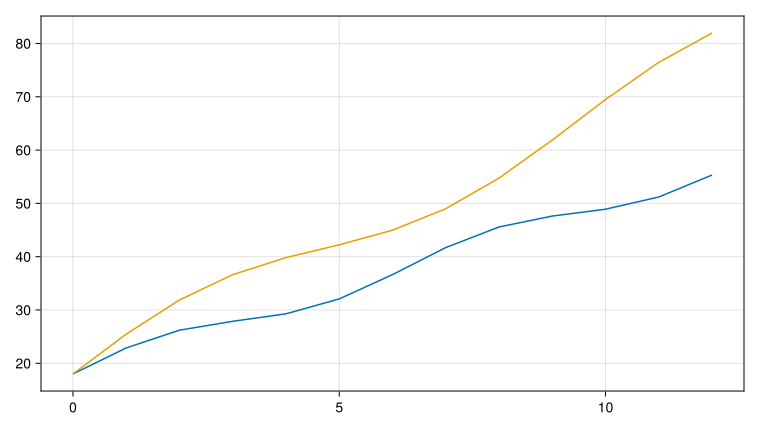
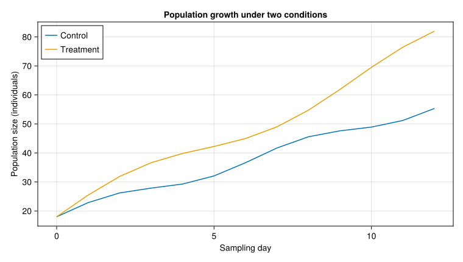
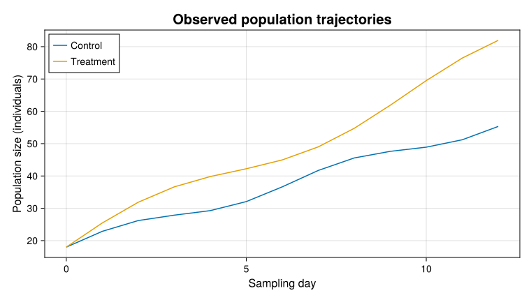
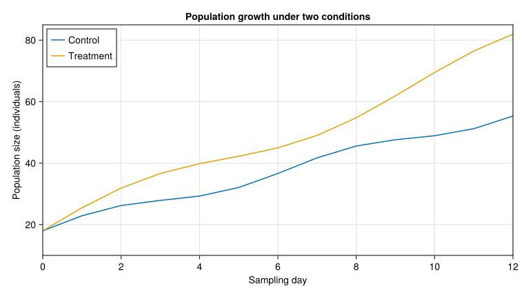
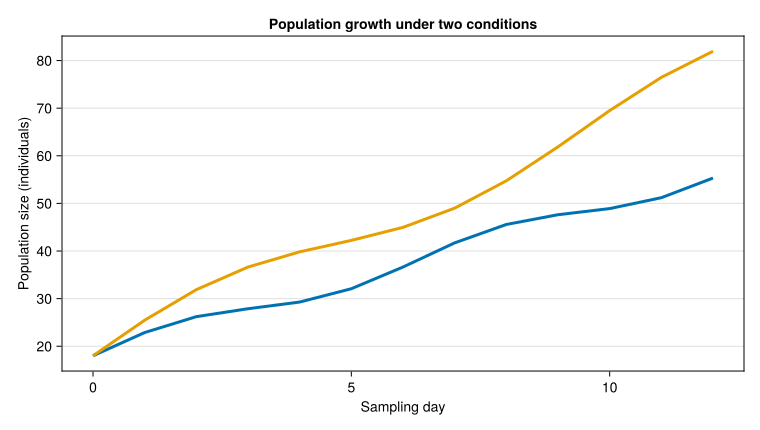
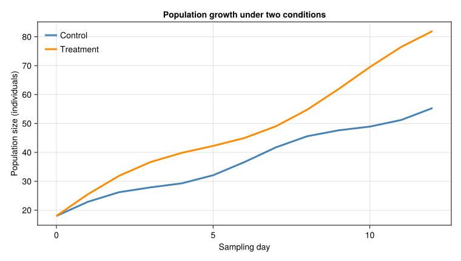
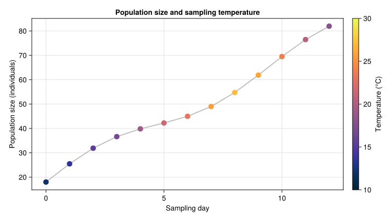
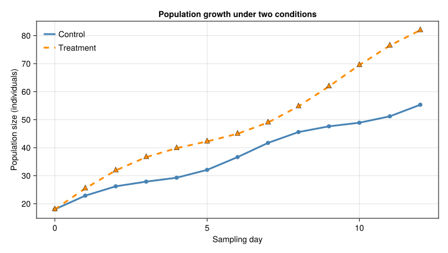
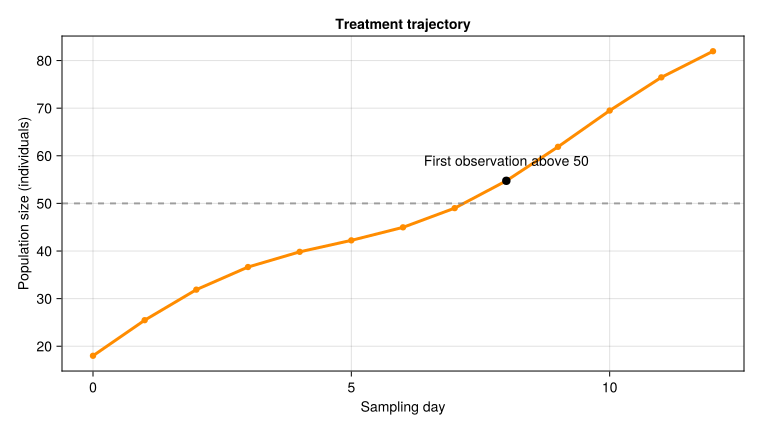
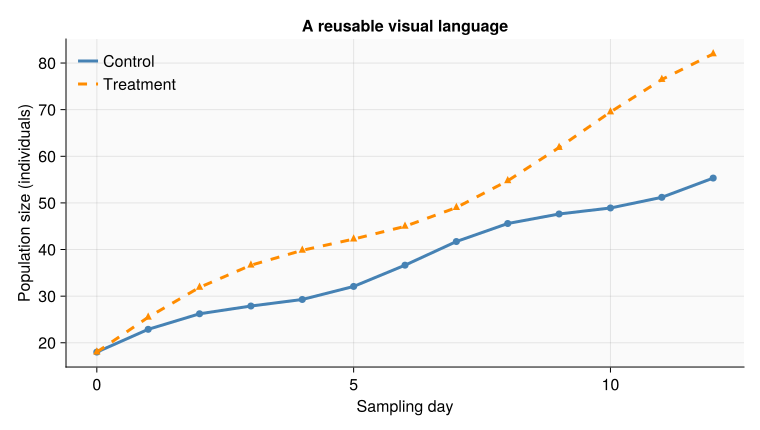

using CairoMakie
CairoMakie.activate!(type = "svg")Styling a figure
Proficiencies
- Background concepts:
- Styling as part of scientific communication rather than decoration
- The distinction between axis attributes and plot attributes
- The difference between categorical and continuous color encodings
- The role of themes in consistent figure design
- Core skills:
- Setting titles, axis labels, limits, ticks, and grid visibility
- Styling lines and markers with keyword arguments
- Mapping numeric values through a colormap
- Adding legends, reference lines, and text annotations
- Defining a reusable Makie
Theme - Applying a theme to a limited block of code with
with_theme - Evaluating a figure for legibility and accessibility
1 Styling as scientific communication
A figure is an argument expressed visually. Its style should make the data, comparisons, and uncertainty easier to interpret. Color, line width, marker shape, text, and spacing are useful only when they clarify those relationships.
Makie exposes visual properties as attributes. Attributes are usually supplied as keyword arguments when constructing an object or calling a plotting function.
The object receiving the attribute determines what it changes:
| Object | Examples of its attributes |
|---|---|
Figure |
size, backgroundcolor, figure_padding |
Axis |
title, xlabel, ylabel, limits, xticks, xgridvisible |
| Line plot | color, linewidth, linestyle, alpha |
| Scatter plot | color, marker, markersize, strokecolor |
Legend |
position, framevisible, orientation |
The examples use CairoMakie so they render as static vector graphics.
2 A baseline figure
The same dataset will support the examples throughout this lesson. The values represent observations from control and treatment groups over 13 sampling days.
days = 0:12
control = 18 .+ 3.2 .* days .+ 2 .* sin.(days)
treatment = 18 .+ 5.0 .* days .+ 4 .* sin.(days ./ 1.5)
baseline_fig = Figure(size = (760, 430))
baseline_ax = Axis(baseline_fig[1, 1])
lines!(baseline_ax, days, control)
lines!(baseline_ax, days, treatment)
baseline_fig
The figure contains the values, but it does not yet identify the variables, groups, or units. Styling begins by making the visual encoding explicit.
3 Axis labels and titles
An axis title states the comparison or result shown in the panel. Axis labels identify the variables and, when applicable, their units.
labeled_fig = Figure(size = (760, 430))
labeled_ax = Axis(
labeled_fig[1, 1];
title = "Population growth under two conditions",
xlabel = "Sampling day",
ylabel = "Population size (individuals)",
)
lines!(labeled_ax, days, control; label = "Control")
lines!(labeled_ax, days, treatment; label = "Treatment")
axislegend(labeled_ax; position = :lt)
labeled_fig
Labels should describe variables rather than data structures. For example, "Population size (individuals)" communicates more than "control" or "y".
TipPut units in axis labels
Write the measured quantity first and its unit in parentheses: "Body mass (g)", "Temperature (°C)", or "Time (days)".
Do not rely on a caption or surrounding prose to supply information that fits naturally in an axis label.
3.1 Setting attributes after construction
Axis attributes remain accessible after the axis has been created. This supports incremental work at the REPL:
labeled_ax.title = "Observed population trajectories"
labeled_ax.titlesize = 20
labeled_ax.xlabelsize = 16
labeled_ax.ylabelsize = 16
labeled_fig
Supplying attributes in the constructor keeps a finished script compact. Changing attributes after construction is useful while inspecting alternatives interactively.
4 Limits and ticks
Axis limits determine the visible interval in data coordinates. Ticks provide reference values within that interval.
limits_fig = Figure(size = (760, 430))
limits_ax = Axis(
limits_fig[1, 1];
title = "Population growth under two conditions",
xlabel = "Sampling day",
ylabel = "Population size (individuals)",
limits = (0, 12, 10, 85),
xticks = 0:2:12,
yticks = 20:20:80,
)
lines!(limits_ax, days, control; label = "Control")
lines!(limits_ax, days, treatment; label = "Treatment")
axislegend(limits_ax; position = :lt)
limits_fig
The 4-value limits tuple has the order (xmin, xmax, ymin, ymax). The tick ranges select major tick locations independently from the limits.
At the REPL, limits can be revised without reconstructing the axis:
xlims!(limits_ax, 2, 10)
ylims!(limits_ax, 15, 75)
limits_figRestore limits from the data with:
autolimits!(limits_ax)
WarningLimits can conceal observations
Values outside the visible limits are clipped from the axis. Use restricted limits only when the omitted interval is irrelevant and the restriction cannot mislead the reader.
Inspect the full data range before narrowing a view.
4.1 Custom tick labels
A tuple of positions and labels gives direct control over tick text:
Axis(
fig[1, 1];
xticks = (
[0, 3, 6, 9, 12],
["Start", "Day 3", "Day 6", "Day 9", "Day 12"],
),
)Use custom labels when the positions have a substantive meaning that numeric values alone do not convey.
4.2 Grid lines
Grid lines help readers compare values across a panel, but heavy grids can compete with the data.
grid_fig = Figure(size = (760, 430))
grid_ax = Axis(
grid_fig[1, 1];
title = "Population growth under two conditions",
xlabel = "Sampling day",
ylabel = "Population size (individuals)",
xgridvisible = false,
ygridcolor = (:grey, 0.25),
ygridwidth = 1,
)
lines!(grid_ax, days, control; linewidth = 3)
lines!(grid_ax, days, treatment; linewidth = 3)
grid_fig
This example removes the vertical grid and retains a subdued horizontal reference grid.
5 Colors and colormaps
Color can identify categories, encode numeric magnitude, or emphasize a specific result. These purposes require different choices.
5.1 Categorical colors
Use clearly distinct colors when each color denotes a separate group.
categorical_fig = Figure(size = (760, 430))
categorical_ax = Axis(
categorical_fig[1, 1];
title = "Population growth under two conditions",
xlabel = "Sampling day",
ylabel = "Population size (individuals)",
)
lines!(
categorical_ax,
days,
control;
color = :steelblue,
linewidth = 3,
label = "Control",
)
lines!(
categorical_ax,
days,
treatment;
color = :darkorange,
linewidth = 3,
label = "Treatment",
)
axislegend(categorical_ax; position = :lt, framevisible = false)
categorical_fig
Named colors such as :steelblue are convenient at the REPL. Hexadecimal strings such as "#4477AA" provide exact, portable choices. A tuple such as (:steelblue, 0.4) combines a color with an alpha value.
TipUse redundant encodings for important groups
Color alone may be difficult to distinguish in grayscale output or for readers with color-vision deficiencies. Combine color with line style or marker shape when group identity is important.
5.2 Continuous colormaps
A continuous colormap maps numeric values to an ordered sequence of colors. The color, colormap, and colorrange attributes define that mapping.
temperatures = [12.0, 13.5, 15.2, 16.8, 19.1, 21.5, 23.0, 25.6, 27.1, 26.0, 23.8, 20.4, 17.9]
color_fig = Figure(size = (760, 430))
color_ax = Axis(
color_fig[1, 1];
title = "Population size and sampling temperature",
xlabel = "Sampling day",
ylabel = "Population size (individuals)",
)
lines!(color_ax, days, treatment; color = (:grey, 0.5), linewidth = 2)
temperature_plot = scatter!(
color_ax,
days,
treatment;
color = temperatures,
colormap = :thermal,
colorrange = (10, 30),
markersize = 15,
)
Colorbar(color_fig[1, 2], temperature_plot; label = "Temperature (°C)")
color_fig
The numeric temperatures vector has one value per marker. Makie normalizes those values across colorrange and samples the :thermal colormap. Constructing the colorbar from temperature_plot preserves the same colormap and numeric range.
Use a sequential colormap for quantities that progress from low to high. Use a diverging colormap when values depart in 2 meaningful directions from a defined midpoint. Use categorical colors, not a continuous gradient, for unordered groups.
6 Lines and markers
Line and marker attributes determine how observations and relationships appear.
6.1 Common line attributes
| Attribute | Meaning | Example |
|---|---|---|
color |
Line color | color = :steelblue |
linewidth |
Line thickness | linewidth = 3 |
linestyle |
Solid, dashed, dotted, or patterned line | linestyle = :dash |
alpha |
Overall opacity | alpha = 0.6 |
6.2 Common scatter attributes
| Attribute | Meaning | Example |
|---|---|---|
marker |
Marker shape | marker = :circle |
markersize |
Marker size | markersize = 12 |
color |
Fill color or numeric color values | color = :darkorange |
strokecolor |
Outline color | strokecolor = :black |
strokewidth |
Outline thickness | strokewidth = 1 |
The following figure uses color, line style, and marker shape together:
marks_fig = Figure(size = (760, 430))
marks_ax = Axis(
marks_fig[1, 1];
title = "Population growth under two conditions",
xlabel = "Sampling day",
ylabel = "Population size (individuals)",
)
lines!(
marks_ax,
days,
control;
color = :steelblue,
linewidth = 3,
linestyle = :solid,
label = "Control",
)
scatter!(
marks_ax,
days,
control;
color = :steelblue,
marker = :circle,
markersize = 10,
)
lines!(
marks_ax,
days,
treatment;
color = :darkorange,
linewidth = 3,
linestyle = :dash,
label = "Treatment",
)
scatter!(
marks_ax,
days,
treatment;
color = :darkorange,
marker = :utriangle,
markersize = 12,
strokecolor = :black,
strokewidth = 0.5,
)
axislegend(marks_ax; position = :lt, framevisible = false)
marks_fig
The scatter calls do not need labels because the corresponding lines already identify the groups. Adding duplicate legend entries would make the legend longer without adding information.
7 Text and annotations
Text within an axis should identify a feature that is difficult to infer from the marks alone. Avoid restating every visible value.
annotation_fig = Figure(size = (760, 430))
annotation_ax = Axis(
annotation_fig[1, 1];
title = "Treatment trajectory",
xlabel = "Sampling day",
ylabel = "Population size (individuals)",
)
lines!(annotation_ax, days, treatment; color = :darkorange, linewidth = 3)
scatter!(annotation_ax, days, treatment; color = :darkorange, markersize = 9)
reference_level = 50
hlines!(
annotation_ax,
[reference_level];
color = (:grey, 0.7),
linestyle = :dash,
linewidth = 2,
)
crossing_index = findfirst(>=(reference_level), treatment)
crossing_day = days[crossing_index]
crossing_value = treatment[crossing_index]
scatter!(annotation_ax, [crossing_day], [crossing_value]; color = :black, markersize = 12)
text!(
annotation_ax,
crossing_day,
crossing_value;
text = "First observation above 50",
align = (:center, :bottom),
offset = (0, 12),
fontsize = 14,
)
annotation_fig
The text position is expressed in data coordinates. The offset shifts the rendered text in screen units so it does not cover the highlighted point. Manual limits may be necessary when an annotation near the panel edge would otherwise be clipped.
NoteAnnotations must add information
Annotate thresholds, interventions, unusual observations, or model-derived events when they matter to interpretation. Move longer explanations to the figure caption.
8 Themes
A Theme stores default attributes that can be reused across figures. Themes reduce repetition and keep related outputs visually consistent.
workshop_theme = Theme(
fontsize = 16,
Axis = (
backgroundcolor = :grey98,
xgridcolor = (:grey, 0.18),
ygridcolor = (:grey, 0.18),
topspinevisible = false,
rightspinevisible = false,
),
Lines = (
linewidth = 3,
),
Scatter = (
markersize = 10,
),
Legend = (
framevisible = false,
),
)Attributes with 5 entries:
Axis => Attributes()
fontsize => 16
Legend => Attributes()
Lines => Attributes()
Scatter => Attributes()Object type names are used as theme keys: Axis, Lines, Scatter, and Legend. The nested named tuples contain defaults for each type. Explicit attributes supplied at a constructor or plotting call can override these defaults.
8.1 Applying a theme temporarily
with_theme applies a theme only while its block executes, then restores the preceding theme.
themed_fig = with_theme(workshop_theme) do
fig = Figure(size = (760, 430))
ax = Axis(
fig[1, 1];
title = "A reusable visual language",
xlabel = "Sampling day",
ylabel = "Population size (individuals)",
)
lines!(ax, days, control; color = :steelblue, label = "Control")
scatter!(ax, days, control; color = :steelblue)
lines!(ax, days, treatment; color = :darkorange, linestyle = :dash, label = "Treatment")
scatter!(ax, days, treatment; color = :darkorange, marker = :utriangle)
axislegend(ax; position = :lt)
fig
end
themed_fig
For a REPL session in which every subsequent figure should use the same defaults, activate a theme globally:
set_theme!(workshop_theme)Reset Makie’s global defaults with:
set_theme!()Use with_theme in scripts and rendered documents because its limited extent prevents one example from changing later examples accidentally.
9 A figure-style checklist
Before saving a figure, inspect it at the size in which it will be read.
- Every axis identifies its variables and units.
- Every visual encoding has a clear meaning.
- The title states the panel’s content without repeating the caption.
- Limits and scales do not conceal or distort relevant values.
- Tick labels remain legible and are not unnecessarily dense.
- Groups remain distinguishable without color alone when group identity is important.
- A continuous color encoding includes a labeled colorbar.
- A categorical encoding uses a legend or direct labels.
- Annotations identify substantive features and do not obscure data.
- Text, line widths, and marker sizes remain legible in the final output medium.
- Repeated figures use consistent encodings and theme defaults.
10 Exercises
Exercise 1
Restyle the baseline control and treatment figure.
- Add an informative title and labels with units.
- Set the x-axis ticks at 2-day intervals.
- Remove the vertical grid and lighten the horizontal grid.
- Give each group a distinct color, line style, and marker shape.
- Add a frameless legend.
- Confirm that both groups remain distinguishable when the figure is viewed in grayscale.
Exercise 2
Create a scatter plot in which marker color represents a third numeric variable.
- Choose a sequential colormap.
- Set an explicit
colorrangethat includes the meaningful range of the variable. - Construct a colorbar from the scatter plot object.
- Label the colorbar with the variable name and unit.
- Annotate one scientifically important observation without covering its marker.
Exercise 3
Define a theme for a set of related figures.
- Set defaults for figure font size, axis grid color, line width, marker size, and legend frame visibility.
- Apply the theme with
with_themeto 2 different figures. - Override one themed attribute explicitly in the second figure.
- Verify that a figure constructed after the
with_themeblock uses Makie’s previous defaults.